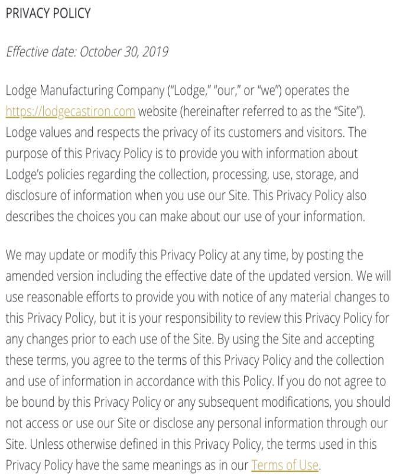

Privacy Xplorer
* * *
Erin Stanton, Alexa Bagnard, Stefania Halac, Emily Rail
An example policy:
Privacy policies are complicated and in the past decade, these numbers have only gotten worse
-
Users would spend more than 200 hours a year reading all the privacy policies encountered.
Based on average yearly salaries, this is over $3,500 annually per person! -
Policies are 1.7x longer than 2008
88% of privacy policies scraped are at or above college level reading difficulty.
Some privacy policy parsing solutions exist
Polisis is the best competitor on the market.
Users can get a high level breakdown of what data is being stored and how it is being used, with specific text analysis of the privacy policy.
Impact of new regulations
* * *
Given the increased complexity of privacy policies, it is difficult to track the adoption of privacy regulations. There have only been small scale studies on the adoption of new regulations.
The landscape of privacy regulations is changing.
-
General Data Protection Regulation (2016 - EU)
- Increased regulation around data privacy and protection - Biggest overhaul in user privacy rights in 20 years - Focuses on transparency for users including increasing readability and giving users access to and control of their personal data
-
California Consumer Privacy Act (2018 - California)
- Follows the footsteps of the GDPR to give CA residents rights and control over their data Requires users to be able to: - Request access to data being collected - Request for data to be deleted - Control how a company uses their data (ie. sell to third parties)
And some static analyses have been conducted
-
The Privacy Policy Landscape After the GDPR (link)
- Comparison of 6200 policies pre and post GDPR - Looks at readability, text features - Replicate Polisis methodology to determine whether there is a significant change in category coverage pre and post, and whether compliance worsened or improved
-
The Effect of the GDPR on Privacy Policies: Recent Progress and Future Promise (link)
- Comparison of 550 policies pre and post GDPR, via PrivacyCheck and manual analysis - Look at compliance across 10 key questions
But there’s a space for Privacy Xplorer
* * *
Provide regulators and researchers insight into how privacy practices have changed over time in response to the General Data Protection Regulations (GDPR).
Privacy Xplorer Website Goals
-
Analyze a corpus that’s 150x the size of prior work
-
Look at adoption year over year, rather than pre and post
-
Focus on user rights: how a users ability to access, edit and delete personal data has changed over time
-
Provide insights on how this adoption varies within and across industries and demonstrate which companies are more transparent about their data collection practices
-
Which companies are proactive in updating their privacy policies
-
Analyze the global impact of GDPR
Category Classification
Potential Industry Contacts
-
Chris Hoofnagle Aranki
Author, Professor, Director Berkeley Center for Law & Technology Focus: effects of law on technology, cybersecurity, privacy and consumer protection
-
Daniel Aranki
Director Berkeley Telemonitoring Project Focus: machine learning, information disclosure and data privacy
-
Deirdre Mulligan
Author, Professor, Director Berkeley Center for Law & Technology Focus: information privacy and security